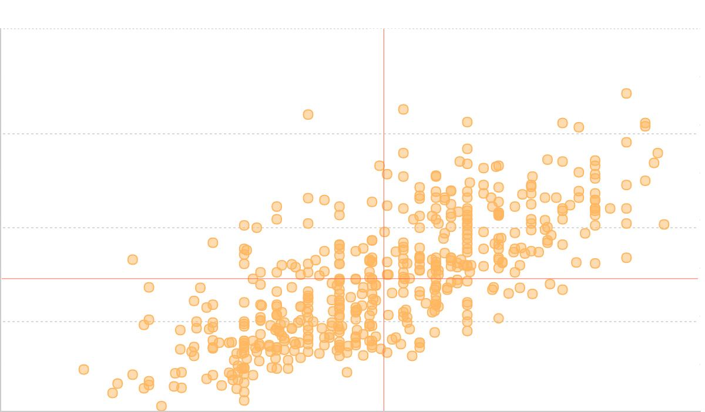

散点图
散点图的简介

散点图也叫 X-Y 图，它将所有的数据以点的形式展现在笛卡尔坐标系上，以显示变量之间的相互影响程度，点的位置由变量的数值决定。
通过观察散点图上数据点的分布情况，我们可以推断出变量间的相关性。如果变量之间不存在相互关系，那么在散点图上就会表现为随机分布的离散的点，如果存在某种相关性，那么大部分的数据点就会相对密集并以某种趋势呈现。数据的相关关系主要分为：正相关（两个变量值同时增长）、负相关（一个变量值增加另一个变量值下降）、不相关、线性相关、指数相关等，表现在散点图上的大致分布如下图所示。那些离点集群较远的点我们称为离群点或者异常点。

散点图经常与回归线（就是最准确地贯穿所有点的线）结合使用，归纳分析现有数据以进行预测分析。
对于那些变量之间存在密切关系，但是这些关系又不像数学公式和物理公式那样能够精确表达的，散点图是一种很好的图形工具。但是在分析过程中需要注意，这两个变量之间的相关性并不等同于确定的因果关系，也可能需要考虑其他的影响因素。
英文名：Scatter graph, Point graph, X-Y plot, Scatter chart or Scattergram
散点图的构成

| 图表类型 |
散点图 |
| 适合的数据 |
两个连续数据字段 |
| 功能 |
观察数据的分布情况 |
| 数据与图形的映射 |
两个连续字段分别映射到横轴和纵轴。
|
| 适合的数据条数 |
暂无限制 |
| 备注 |
可更具实际情况对点的形状进行分类字段的映射。点的颜色进行分类或连续字段的映射。 |
散点图的应用场景
散点图通常用于显示和比较数值，不光可以显示趋势，还能显示数据集群的形状，以及在数据云团中各数据点的关系。
例子：这里通过男女身高和体重的例子来展示上述所描述的散点图的功能。
| 性别 |
身高（cm） |
体重（kg） |
| 女 |
167.5 |
59 |
| 女 |
161.2 |
51.6 |
| 男 |
176 |
86.4 |
| ... |
... |
... |
| 男 |
180.3 |
82.8 |
(1) 首先对身高和体重两个维度进行比较，可以看到所有的数据点比较集中，呈正相关关系，即身高越高，相应的体重会越大。
$.getJSON('/data.json?filename=scatter',function (data) {
var Stat = G2.Stat;
var frame = new G2.Frame(data);
var hAvg = G2.Frame.mean(frame,'height'); // 计算体重的均值
var wAvg = G2.Frame.mean(frame,'weight'); // 计算身高均值
var lineCfg = { // 线的配置信息
stroke: '#f96a52'
};
var chart1 = new G2.Chart({
id: 'c2',
width : 800,
height : 400
});
chart1.source(data);
chart1.col('weight',{
alias: '体重（kg）'
});
chart1.col('height',{
alias: '身高（cm）'
});
chart1.point().position('height*weight').color('#00a3d7').opacity(0.5).shape('circle');
chart1.render();
});
(2) 通过添加平均身高和平均体重的辅助线，将散点图的平面坐标分为四个象限，可以更好得看出数据的分布情况。
$.getJSON('/data.json?filename=scatter',function (data) {
var Stat = G2.Stat;
var frame = new G2.Frame(data);
var hAvg = G2.Frame.mean(frame,'height'); // 计算体重的均值
var wAvg = G2.Frame.mean(frame,'weight'); // 计算身高均值
var lineCfg = { // 线的配置信息
stroke: '#f96a52'
};
var chart2 = new G2.Chart({
id: 'c3',
width : 800,
height : 400
});
chart2.source(data);
chart2.col('weight',{
alias: '体重（kg）'
});
chart2.col('height',{
alias: '身高（cm）'
});
chart2.point().position('height*weight').color('#fdb667').opacity(0.5).shape('circle');
chart2.guide().tag([hAvg, 40], [hAvg, 120], '身高平均值: ' + hAvg.toFixed(2), {line:lineCfg});
chart2.guide().tag([140, wAvg], [200, wAvg], '体重平均值' + wAvg.toFixed(2), {line:lineCfg});
chart2.render();
});
(3) 新增一个维度：我们根据性别为每个点加上不同颜色，以展示男女不同性别身高和体重数据的分布。
$.getJSON('/data.json?filename=scatter',function (data) {
var Stat = G2.Stat;
var frame = new G2.Frame(data);
var hAvg = G2.Frame.mean(frame,'height'); // 计算体重的均值
var wAvg = G2.Frame.mean(frame,'weight'); // 计算身高均值
var lineCfg = { // 线的配置信息
stroke: '#f96a52'
};
var chart3 = new G2.Chart({
id: 'c4',
width : 800,
height : 400
});
chart3.source(data);
chart3.col('weight',{
alias: '体重（kg）'
});
chart3.col('height',{
alias: '身高（cm）'
});
chart3.point().position('height*weight').color('gender', ['#f96a52', '#00a3d7']).opacity(0.5).shape('circle');
chart3.guide().tag([hAvg, 40], [hAvg, 120], '身高平均值: ' + hAvg.toFixed(2), {line:lineCfg});
chart3.guide().tag([140, wAvg], [200, wAvg], '体重平均值: ' + wAvg.toFixed(2), {line:lineCfg});
chart3.render();
chart3.on('tooltipchange',function(ev){
var items = ev.items;
var origin = items[0];
items.splice(0);
items.push({
name: origin.name,
value: origin.title + ' cm, ' + origin.value + ' kg',
color: origin.color
});
});
});
(4) 同时我们也可以根据样本数据特征计算出回归方程，并为散点图添加回归线。
$.getJSON('/data.json?filename=scatter',function (data) {
var Stat = G2.Stat;
var frame = new G2.Frame(data);
var hAvg = G2.Frame.mean(frame,'height'); // 计算体重的均值
var wAvg = G2.Frame.mean(frame,'weight'); // 计算身高均值
var lineCfg = { // 线的配置信息
stroke: '#f96a52'
};
var chart4 = new G2.Chart({
id: 'c5',
width : 800,
height : 400
});
chart4.source(data);
chart4.col('weight',{
alias: '体重（kg）'
});
chart4.col('height',{
alias: '身高（cm）'
});
chart4.point().position('height*weight').color('gender', ['#f96a52', '#00a3d7']).opacity(0.5).shape('circle');
chart4.line().position(Stat.smooth.quadratic('height*weight'));
chart4.render();
chart4.on('tooltipchange',function(ev){
var items = ev.items;
var origin = items[0];
items.splice(0);
items.push({
name: origin.name,
value: origin.title + ' cm, ' + origin.value + ' kg',
color: origin.color
});
});
});
散点图的扩展
我们可以改变数据点形状来表示数据值的区别。
$.getJSON('/data.json?filename=diamond',function (data) {
var chart = new G2.Chart({
id: 'c6',
width : 800,
height : 400,
plotCfg: {
margin: [20, 90, 60, 80]
}
});
chart.source(data);
chart.point().position('carat*price').shape('cut').color('cut');
chart.render();
});
$.getJSON('/data.json?filename=diamond',function (data) {
var chart1 = new G2.Chart({
id: 'c7',
width : 800,
height : 400,
plotCfg: {
margin: [20, 90, 60, 80]
}
});
var shapes = ['cross','tick','plus','hyphen','line']; // 更换图形类型
chart1.source(data);
chart1.point().position('carat*price').shape('cut',shapes).color('cut');
chart1.render();
});
散点图与其他图表的对比
这里我们从适用场景和可视化表现两个角度进行对比。
适用场景
- 折线图可以显示随单位（如：单位时间）而变化的连续数据，因此非常适用于显示在相等时间间隔下数据的趋势。
- 散点图显示若干数据系列中各数值之间的关系，或者将两组数绘制为 xy 坐标的一个系列。
可视化表现
- 在折线图中，类别数据沿水平轴均匀分布，所有值数据沿垂直轴均匀分布，即折线图只有一个数据轴（即垂直轴）。
- 散点图有两个数值轴，沿水平轴（x 轴）方向显示一组数值数据，沿垂直轴（y 轴）方向显示另一组数值数据。散点图将这些数值合并到单一数据点并以不均匀间隔或簇显示它们。散点图通常用于显示和比较数值，例如科学数据、统计数据和工程数据。
散点图和点图
- 散点图：散点图用于绘制多变量数据，以显示变量之间的关系，通常使用二维坐标系进行绘制。
- 点图：与直方图类似，用于显示
单刻度变量的分布情况。数据是分箱化的，但不是为每个分箱（与计数类似）显示一个值，而是显示并堆积每个分箱中的所有点。点图有时称为密度图。
散点图的扩展阅读
变型
标签
实现
G2